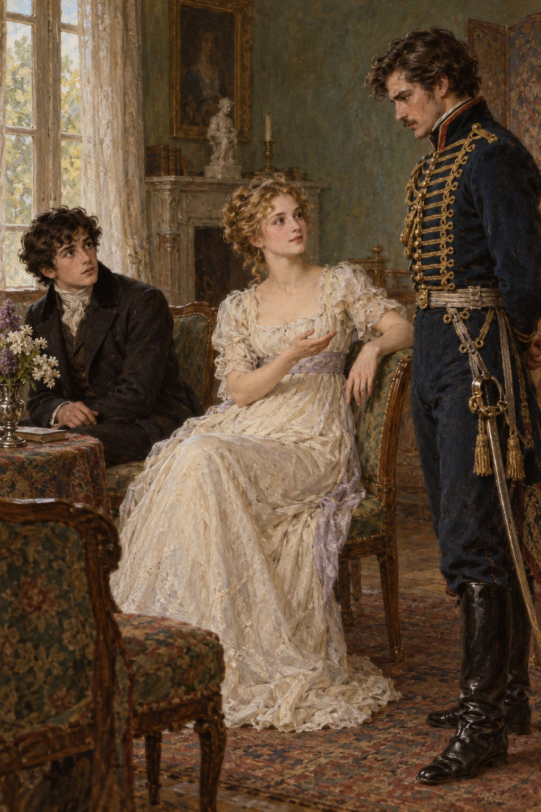

Ivan Turgenev · First Love
제13장
그날 내내
나는 들뜨고 뿌듯했다.
얼굴에는 지나이다의 입맞춤이
아직도 생생하게 남아 있었다.
그녀의 말을 하나하나 떠올릴 때마다
기쁨에 몸이 떨렸다.
뜻밖에 찾아온 행복을
조심스레 품었다.
그러다 두렵기까지 했다.
새로운 감정을 준
그녀를 만나고 싶지 않을 만큼.
운명에게 더 바랄 것은
없을 것 같았다.
‘이제 마지막으로
깊이 숨 한 번 쉬고
죽어도 좋겠구나.’
하지만 다음 날
별채로 가는 길에는
몹시 당황스러웠다.
비밀을 지킬 줄 아는 사람처럼
여유 있고 점잖은 체하며
숨기려 했지만
소용없었다.
지나이다는 아무 일도 없었던 듯
나를 맞았다.
조금도 동요하지 않았다.
손가락을 들어 나를 타이르더니
멍이 들지는 않았느냐고 물었다.
점잖은 척하던 태도와
비밀스러운 마음,
당황스러움까지
한순간에 사라졌다.
특별한 일을 기대한 건 아니었다.
그래도 그녀의 태연함은
찬물을 끼얹는 듯했다.
그녀 눈에 나는
어린아이일 뿐이라는 걸 알았다.
마음이 몹시 아팠다.
지나이다는 방을 오갔다.
나를 볼 때마다
재빨리 웃어 주었다.
하지만 마음은
먼 곳에 가 있다는 게
분명히 보였다.
‘어제 일을
내가 먼저 꺼내 볼까?
어디로 그렇게 급히 갔는지
물어보면 알 수 있을 텐데.’
나는 손을 내젓고
구석에 앉았다.
벨로브조로프가 들어왔다.
나는 그가 반가웠다.
“얌전한 승용마를
구하지 못했습니다.”
그가 무거운 목소리로 말했다.
“프레이타크가
말 한 마리를 보증하긴 하는데
믿음이 안 갑니다.
걱정돼서요.”

“무엇이 걱정되시는데요?”
지나이다가 물었다.
“말을 탈 줄 모르시잖습니까.
무슨 일이라도 생기면
어쩝니까?
갑자기 왜 타겠다는 생각을
하셨습니까?”
“그건 제 일이에요,
내 짐승 씨.
그럼 표트르 바실리예비치께
부탁하면 되겠네요.”
표트르 바실리예비치는
내 아버지의 이름이었다.
지나이다가 그 이름을
너무도 스스럼없이 말해
나는 놀랐다.
아버지가 기꺼이
도와주리라고
확신하는 듯했다.
“그렇습니까?”
벨로브조로프가 말했다.
“그분과 같이 타시겠다고요?”
“그분이든 다른 분이든
당신에게 무슨 상관이에요.
당신과는 안 탈 거예요.”
“저와는 안 타시겠다고요.
알겠습니다.
그래도 말은 구해 오지요.”
“소 같은 말은 안 돼요.
저는 달리고 싶으니까요.”
“마음껏 달리십시오.
누구와 타시려고요?
말렙스키와요?”
“그 사람과 타면 왜 안 되죠,
군인 양반?
진정하세요.”
그녀가 덧붙였다.
“그렇게 눈을 번뜩이지 말고요.
당신도 데려갈게요.
이제 말렙스키는 제게
이런 사람이란 거 알잖아요.
흥.”
지나이다가 머리를 흔들었다.
“저를 달래려고
하는 말씀이군요.”
벨로브조로프가 중얼거렸다.
지나이다는 눈을 가늘게 떴다.
“그 말에 위로가 돼요?
아, 군인 양반도 참.”
다른 말을 찾지 못한 듯했다.
그러더니 내게 물었다.
“볼데마르 씨는
우리와 함께 타실래요?”
“저는 여럿이서…
함께 있는 건….”
나는 눈도 들지 못하고
중얼거렸다.
“둘만 있는 게 좋으세요?”
지나이다는 한숨을 쉬었다.
“뭐, 각자 원하는 대로 하는 거지요.
벨로브조로프 씨,
그럼 말을 알아봐 주세요.
내일 필요해요.”
“말 살 돈은 어디서 나니?”
공작부인이 끼어들었다.
지나이다는 눈살을 찌푸렸다.
“어머니께 달라는 거 아니에요.
벨로브조로프 씨가
외상으로 해 줄 거예요.”
“외상이지, 외상….”
공작부인이 중얼거렸다.
그러다 목청껏 외쳤다.
“두냐슈카!”
“어머니,
제가 종을 드렸잖아요.”
지나이다가 말했다.
“두냐슈카!”
공작부인이 다시 외쳤다.
벨로브조로프는 인사하고 나갔다.
나도 그와 함께 나왔다.
지나이다는
나를 붙잡지 않았다.